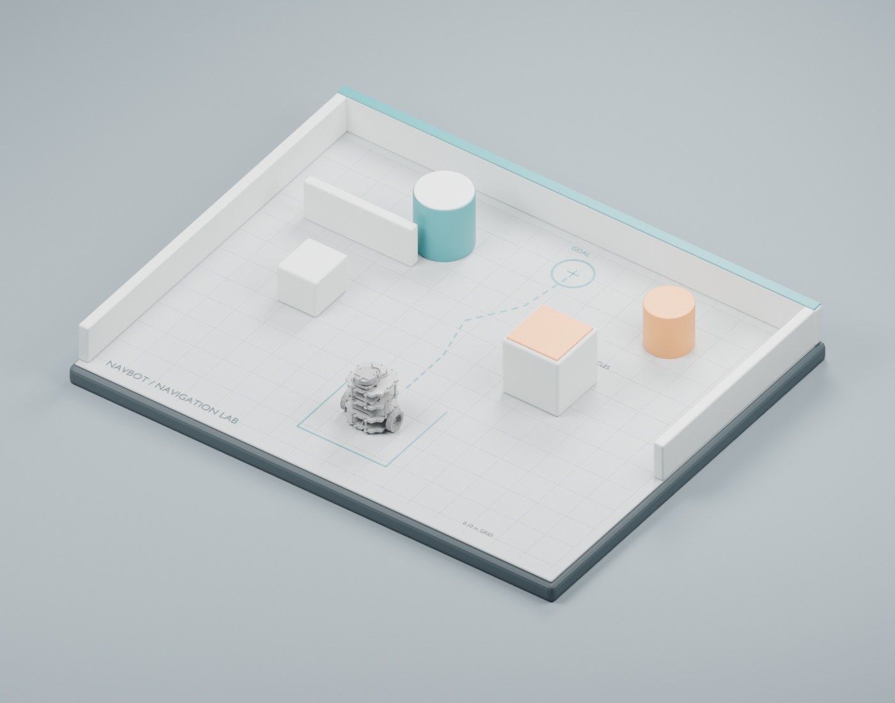
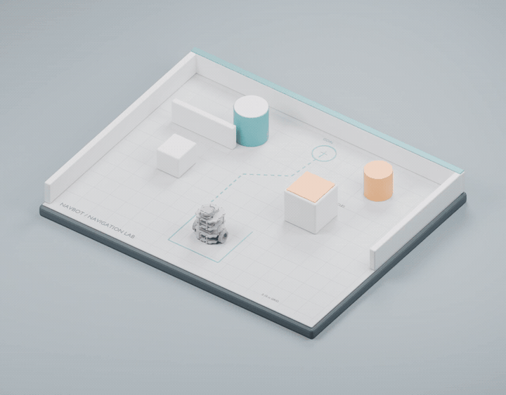

01
ROBOT LEARNING
NavBot
Gazebo、ROS、PPO、行为克隆、残差控制与泛化测试。
GazeboROSPPO
LEARNING IN PUBLIC · 2026
这里记录我从 Gazebo 导航实验出发，沿着 AI Agent、Blender、OpenUSD、Omniverse 与机器人学习一路探索的过程。
00 / MANIFESTO
我不是在收集软件名称。
我想理解一台机器人如何感知、学习、失败与成长；一个数字世界如何被创建、组合和随机化；以及 AI Agent 如何把现实数据转化成可用于训练的仿真资产。
01 / UNIVERSE MAP
每个节点都是一段学习记录，也是一块未来系统的拼图。
ROBOT LEARNING
Gazebo、ROS、PPO、行为克隆、残差控制与泛化测试。
WORLD BUILDING
让 AI Agent 通过 Blender 与 Houdini 生成、整理和验证数字环境。
SCENE INFRASTRUCTURE
从 Stage、Prim 和 Layer，到 Composition、Variant 与认证考试。
SIMULATION STACK
Isaac Sim、Isaac Lab、Newton、MuJoCo 与多仿真器工作流。
THE LONG ARC
用 domain randomization、传感器模拟和真实数据缩短数字世界与现实机器人的距离。
02 / FIELD NOTES

CASE STUDY 001 · ACTIVE
NavBot 最初只是一个 TurtleBot3 导航实验。机器人能够朝目标前进，却会撞上挡在正中的柱子。这个明确的失败案例，推动了 residual PPO、control gate、reward shaping、behavior cloning 与泛化测试。
后来我意识到：策略学习之外，可信、可变、可复现的环境本身也是瓶颈。于是 SimForge Agent 出现了。
03 / DEVLOG

最小的连接测试：自然语言指令能否可靠地创造物体、材质、灯光和相机？
文章整理中Visual mesh 与 collision geometry 的区别，以及一个“缺失”模型如何仍能参与物理仿真。
文章整理中一次动画渲染如何带我们看清 Blender、FFmpeg、文件缓存与恢复风险。
文章整理中04 / OPENUSD CERTIFICATE JOURNEY
官方资料、视频、实验、踩坑、备考与考试经历都会成为这条公开学习路径的一部分。最终目标不是记住答案，而是能用 USD 组织真实的机器人世界。
Stage · Prim · Layer · Composition
NOW / NEXT TRANSMISSION
这个网站会随着实验一起生长。没有“完成”的那一天，只有不断被点亮的新节点。